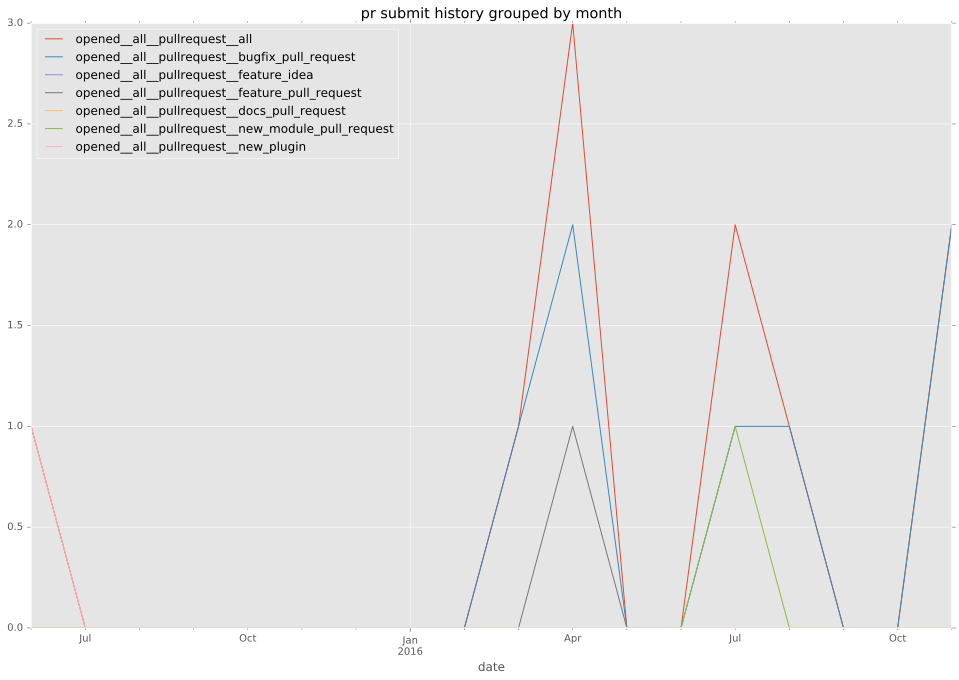
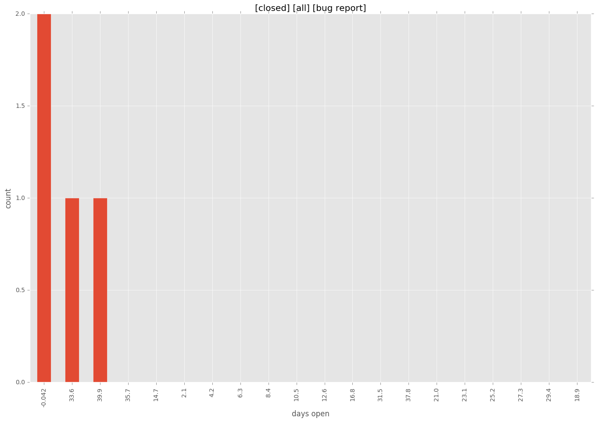

authors
- wimnat
maintainers
- wimnat
contributors
- wimnat : 78 commits
- bcoca : 35 commits
- jmunhoz : 33 commits
- ryansb : 8 commits
- ryansydnor : 1 commits
- ashb : 1 commits
total issue counts
feature pull request: 3
pullrequest: 13
bugfix pull request: 9
feature idea: 2
issue: 9
new plugin: 1
bug report: 7
issue history

pullrequest history


days open by issue type
bugfix pull request
count: 13
std: 59.5323656854
min: 9
max: 160
median: 19.0
mean: 57.4615384615
all
count: 21
std: 51.2947133635
min: 0
max: 160
median: 19.0
mean: 44.619047619
pullrequest
count: 0
std: nan
min: nan
max: nan
median: nan
mean: nan
feature pull request
count: 2
std: 0.0
min: 2
max: 2
median: 2.0
mean: 2.0
feature idea
count: 0
std: nan
min: nan
max: nan
median: nan
mean: nan
issue
count: 0
std: nan
min: nan
max: nan
median: nan
mean: nan
new plugin
count: 2
std: 0.0
min: 55
max: 55
median: 55.0
mean: 55.0
bug report
count: 4
std: 22.1810730128
min: 0
max: 42
median: 17.0
mean: 19.0
closures grouped by total days open
